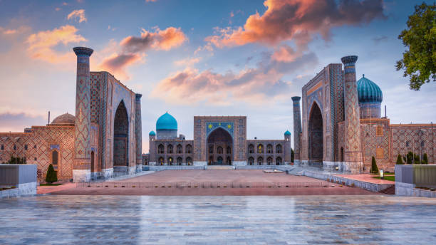
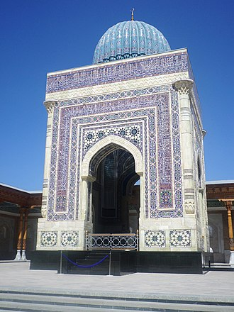
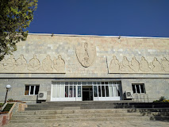
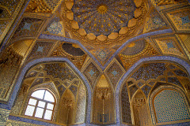
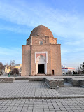
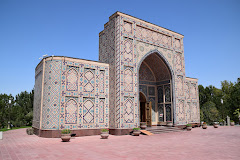
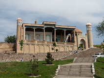

The Registan
The Registan (Uzbek: Регистон, Registon) was the heart of the ancient city of Samarkand of the Timurid Empire, now in Uzbekistan. The name Rēgistan (ریگستان) means "sandy place" or "desert" in Persian.
The Registan was a public square, where people gathered to hear royal proclamations, heralded by blasts on enormous copper pipes called dzharchis - and a place of public executions. It is framed by three madrasahs (Islamic schools) of distinctive Islamic architecture. The square was regarded as the hub of the Timurid Renaissance.
Go there
.jpg)
The Guri Amir
The Gūr-i Amīr or Guri Amir (Uzbek: Amir Temur maqbarasi, Go'ri Amir, Persian: گورِ امیر) is a mausoleum of the Turco-Mongol[1] conqueror Timur (also known as Tamerlane) in Samarkand, Uzbekistan. It occupies an important place in the history of Central Asian Architecture[2] as the precursor for and had influence on later Great Mughal architecture tombs, including Gardens of Babur in Kabul, Humayun's Tomb in Delhi and the Taj Mahal in Agra, built by Timur's Indian descendants, Turco-Mongols[3] that followed Indian culture with Central Asian influences,[4] Mughals established the ruling Mughal dynasty of the Indian subcontinent. The mausoleum has been heavily restored.
Go there

The Al Bukhoriy
Muhammad ibn Isma'il al-Bukhari (Arabic: محمد بن إسماعيل البخاري, romanized: Muḥammad ibn Ismā‘īl al-Bukhārī, 21 July 810 – 1 September 870),[note 1] commonly referred to as Imām al-Bukhāri or Imām Bukhāri, was a 9th-century Persian Muslim muhaddith who is widely regarded as the most important hadith scholar in the history of Sunni Islam. Al-Bukhari's extant works include the hadith collection Sahih al-Bukhari, Al-Tarikh al-Kabir, and Al-Adab al-Mufrad.
Go there

The Shaxi Zinda
The Shah-i-Zinda Ensemble includes mausoleums and other ritual buildings of 11th – 15th and 19th centuries. The name Shah-i-Zinda (meaning "The living king") is connected with the legend that Qutham ibn Abbas, a cousin of the Prophet Muhammad, is buried here. He came to Samarkand with the Arab invasion in the 7th century to preach Islam. Popular legends speak that he was beheaded for his faith but he didn't die, took his head and went into the deep well (Garden of Paradise), where he's still living.
The Shah-i-Zinda complex was formed over eight (from the 11th until the 19th) centuries and now includes more than twenty buildings.
Go there
The Museum
Afrasiab Museum of Samarkand is a museum located at the historical site of Afrasiyab, one of the largest archaeological sites in the world and the ancient city that was destroyed by the Mongols in the early 13th century. Museum building and the archaeological site are located in the north-eastern part of the city of Samarkand in the Central Asian country of Uzbekistan. Permanent exhibition of the Afrasiab Museum of Samarkand is focused on the history of the city itself as well as the surrounding region. The museum building was designed by Armenian architect Bagdasar Arzumanyan in 1970, at the time when Uzbek Soviet Socialist Republic was still part of the Soviet Union.
Go there
The Oksaray
The Aksaray mausoleum is a very interesting place in Samarkand. The literal translation of its name from Turkic is “the white palace”. The mausoleum is more than 1,500 years old. It is located near the Gur-Emir Mausoleum where the remains of Tamerlane and the descendants of the Timurids were buried.
Unfortunately, tourists often pay no attention to this monument. It is not surprising since this mausoleum looks inconspicuous against the background of the luxurious architectural monuments of Samarkand: brick walls, a dome on a drum that is also made of brick, no bright gloss at all.
Go there

The Ruxabad
The Rukhabad Mausoleum, built by order of Amir Timur in 1380, was erected over the grave of Islamic theologian and mystic Sheikh Burhaneddin Sagaradzhi, much esteemed by Timur’s contemporaries.
Burhaneddin Sagaradzhi significantly contributed to make Islam widespread among the nomads of Eastern Turkestan. The Islamic scholar, who was married to a Chinese princess, enjoyed great influence at the court of the Yuan dynasty in China. The exact date of his death has not been established, but it is known that he died in China. After the death, according to the Sagaradzhi’s will, his son Abu Said brought his remains to Samarkand.
Go there
The Ulugh Beg Observatory
The Ulugh Beg Observatory is an observatory in Samarkand, Uzbekistan, built in the 1420s by the Timurid astronomer Ulugh Beg. Islamic astronomers who worked at the observatory include Al-Kashi, Ali Qushji, and Ulugh Beg himself. The observatory was destroyed in 1449 and rediscovered in 1908
Go there
The Xazrati Xizir
Hazrat Hyzr mosque is located on the south of Afrasiab fort. The area of the Mosque is 30 x 16 m. It stands on a natural elevation where a steep stairs leads. The mosque consists of aivan and khanaka. The mosque’s aivan (an indoor canopy standing on the columns) is richly decorated with ornaments. There is an entrance from aivan to khanaka (a monastery for dervishes). Hanaka is square, with mihrabi niche with the direction to Mecca in the middle and two hudzhry (monks' cells) on the sides. The minaret is located separately. It consists of a trunk with a spiral staircase and a crowning lantern with ribbed dome.
Go there